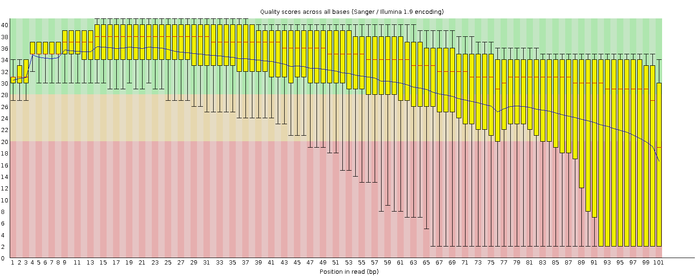
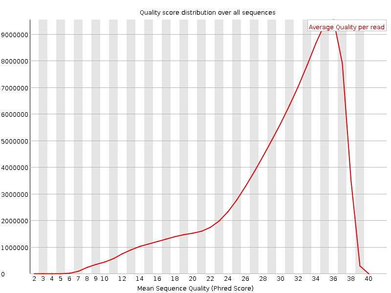
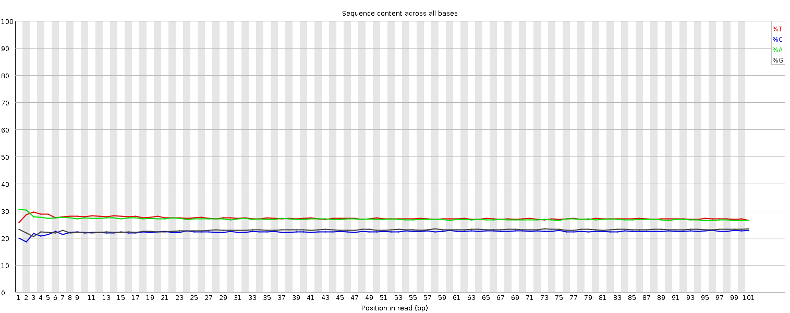
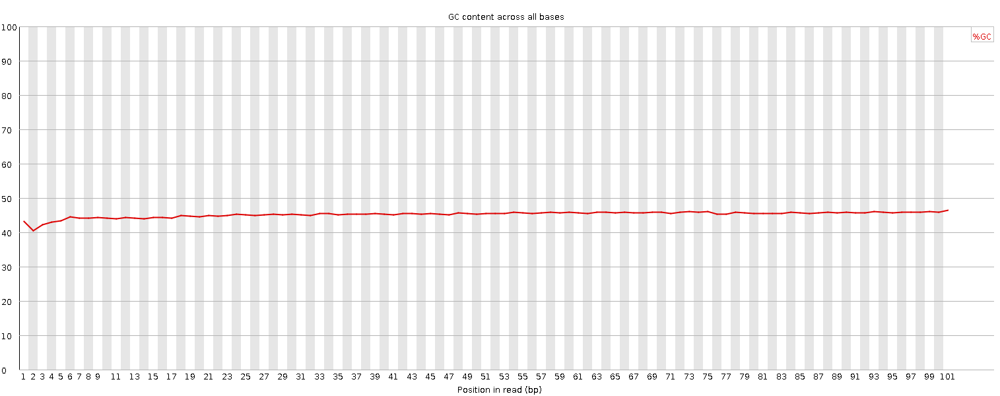
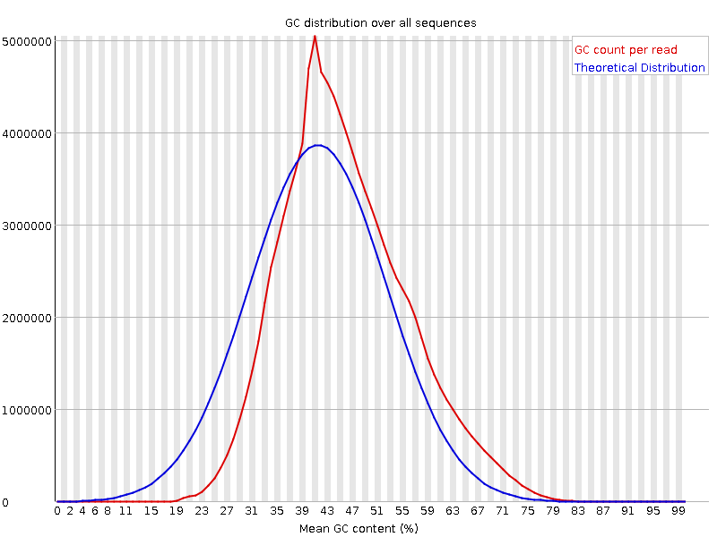
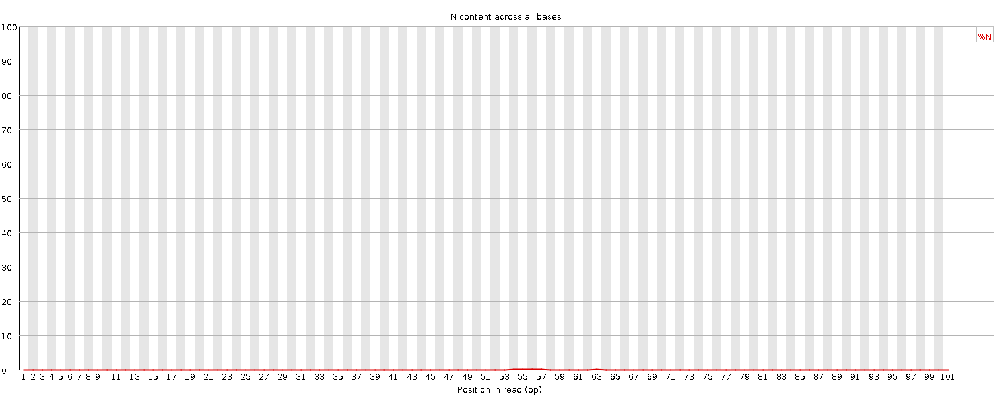
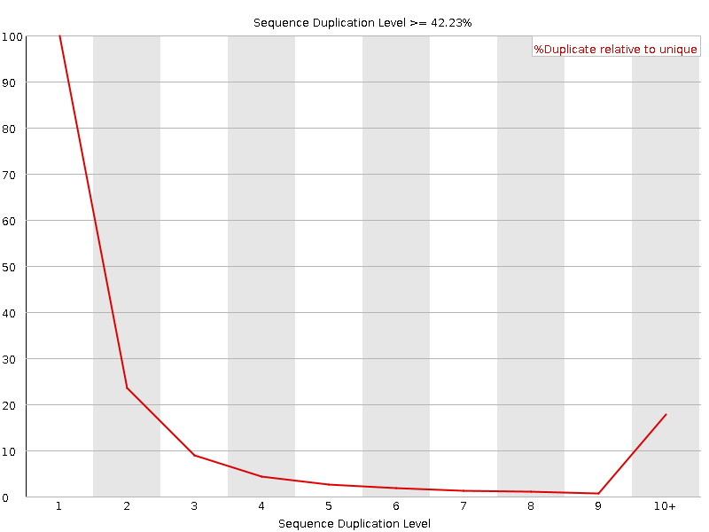
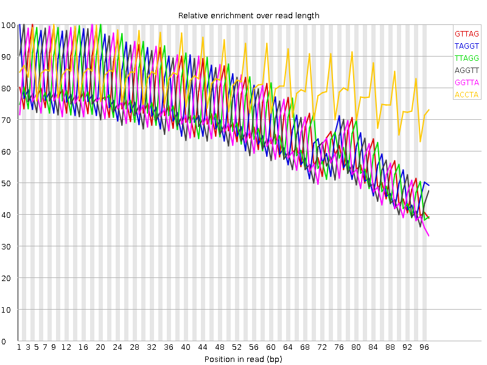

![[OK]](Icons/tick.png) Basic Statistics
Basic Statistics
| Measure | Value |
|---|---|
| Filename | 120315_0312_AD0T4UACXX_3_SA-PE-041_1.sanfastq.gz |
| File type | Conventional base calls |
| Encoding | Sanger / Illumina 1.9 |
| Total Sequences | 105781666 |
| Filtered Sequences | 0 |
| Sequence length | 101 |
| %GC | 45 |
![[FAIL]](Icons/error.png) Per base sequence quality
Per base sequence quality

Per sequence quality scores

![[WARN]](Icons/warning.png) Per base sequence content
Per base sequence content

Per base GC content

Per sequence GC content

Per base N content

Sequence Length Distribution

Sequence Duplication Levels

Overrepresented sequences
| Sequence | Count | Percentage | Possible Source |
|---|---|---|---|
| TAGGTTAGGTTAGGTTAGGTTAGGTTAGGTTAGGTTAGGTTAGGTTAGGT | 403158 | 0.38112275524191497 | No Hit |
| CTAACCTAACCTAACCTAACCTAACCTAACCTAACCTAACCTAACCTAAC | 385625 | 0.3645480493755884 | No Hit |
| AGGTTAGGTTAGGTTAGGTTAGGTTAGGTTAGGTTAGGTTAGGTTAGGTT | 361567 | 0.34180497781156144 | No Hit |
| GTTAGGTTAGGTTAGGTTAGGTTAGGTTAGGTTAGGTTAGGTTAGGTTAG | 326532 | 0.30868487172436854 | No Hit |
| AACCTAACCTAACCTAACCTAACCTAACCTAACCTAACCTAACCTAACCT | 325856 | 0.30804581958465277 | No Hit |
| TAACCTAACCTAACCTAACCTAACCTAACCTAACCTAACCTAACCTAACC | 318340 | 0.3009406185756235 | No Hit |
| ACCTAACCTAACCTAACCTAACCTAACCTAACCTAACCTAACCTAACCTA | 316993 | 0.29966724101320164 | No Hit |
| TTAGGTTAGGTTAGGTTAGGTTAGGTTAGGTTAGGTTAGGTTAGGTTAGG | 310747 | 0.2937626261246443 | No Hit |
| GGTTAGGTTAGGTTAGGTTAGGTTAGGTTAGGTTAGGTTAGGTTAGGTTA | 283460 | 0.26796704071573235 | No Hit |
| CCTAACCTAACCTAACCTAACCTAACCTAACCTAACCTAACCTAACCTAA | 277273 | 0.26211820108788986 | No Hit |
Kmer Content

| Sequence | Count | Obs/Exp Overall | Obs/Exp Max | Max Obs/Exp Position |
|---|---|---|---|---|
| GTTAG | 51334175 | 4.6343055 | 6.6181264 | 4 |
| TAGGT | 50840080 | 4.5896997 | 6.6375213 | 1 |
| TTAGG | 49388075 | 4.458617 | 6.368971 | 20 |
| AGGTT | 49125150 | 4.4348807 | 6.4848304 | 2 |
| GGTTA | 48045070 | 4.3373747 | 6.30995 | 18 |
| ACCTA | 43414375 | 4.1633353 | 5.0760756 | 9 |
| CTAAC | 43234400 | 4.146076 | 4.967877 | 1 |
| AACCT | 41524260 | 3.9820776 | 4.9264345 | 8 |
| CCTAA | 40708720 | 3.9038694 | 4.78725 | 10 |
| CATCA | 40560830 | 3.889687 | 4.4859314 | 81 |
| TAACC | 40559745 | 3.889583 | 4.7946844 | 2 |
| TGATG | 42828945 | 3.8664773 | 4.252646 | 41 |
| TCATC | 39154925 | 3.719724 | 4.4003925 | 20 |
| GATGA | 40268630 | 3.6696818 | 4.0456395 | 78 |